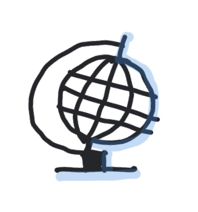
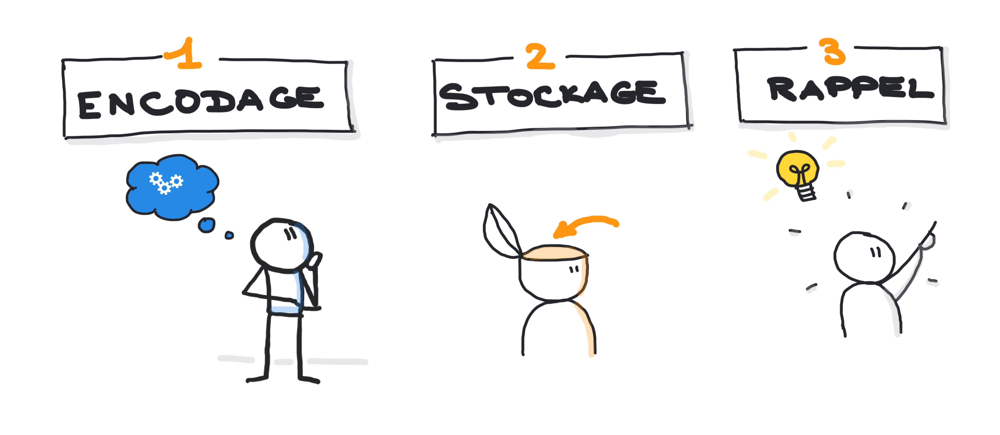

(ou comment se perfectionner dans la technique de la chaîne...)
?
?
?
?
INTRODUCTION
Ceci est ma Troisième Séance.
Il s’agit dans cette séance de s'entraîner une dernière fois à la technique de la chaîne pour retenir des listes.
Prenez cela comme un jeu et vous vous rendrez compte que l'on peut apprendre en s'amusant ! D'autre part, pratiquer est extrêmement
important si vous voulez prendre confiance en vous !
Ensuite, je vais vous faire faire un petit exercice qui vous fera prendre conscience qu'il y a un moyen simple de dépasser
les capacitées limitées de votre mémoire de travail (le fameux "5 à 9 éléments" en moyenne). Il est important de comprendre qu'il
ne s'agit pas forcément de mots.
UN PETIT ENTRAÎNEMENT EN HISTOIRE-GÉOGRAPHIE
Rappelez-vous qu'il faut rendre l’information « mémorable » grâce
à notre imagination. Donc, n'hésitez pas à trouver des associations personnelles (cela fait appel à la mémoire dite
« épisodique » ). À vous de trouver une image mentale qui vous fera penser immédiatement au pays ou à la capitale à retenir.
Ensuite, ici il n'y a pas de notion d'ordre mais il faudra IMPÉRATIVEMENT faire une association,
entre votre image mentale du Pays et votre image mentale de sa Capitale ! Ensuite, il faut qu'elles interagissent l'une avec l'autre pour
que l'une appelle l'autre dans votre tête. Notez bien que cela marche dans les 2 sens : si je prononce la Capitale "Podgorica" dans ma tête, cela fait remonter
immédiatement mon image mentale de "Podgorica" et me revient presque instantanément l'image mentale du Pays et donc "Monténégro".

Essayez de mémoriser les capitales de ces 16 pays :
Avant-propos :
Biélorussie - Minsk
Finlande - Helsinki
Albanie - Tirana
Liechtenstein - Vaduz
Macédoine - Skopje
Roumanie - Bucarest
Bulgarie - Sofia
Croatie - Zagreb
Monténégro - Podgorica
Suède - Stockholm
Malte - La Valette
Moldavie - Chisinau
Estonie - Tallinn
Lettonie - Riga
Lituanie - Vilnius
Slovaquie - Brastislava
Écoutez une proposition de solution :
COMMENT DÉPASSER LES LIMITES DE NOTRE MÉMOIRE DE TRAVAIL ?
Maintenant, il est temps de vous faire prendre conscience de ce qu'est vraiment la mémoire de travail.
Pour cela, je vais vous faire faire un petit exercice qui en plus aura de l'intérêt pour toute la suite ! Voici une liste de mots
simples pris au hasard :
Maintenant, je vais vous demander de faire une 1ère chose avec cette liste : créez 4 catégories où vous pouvez ranger ces 20 mots et prenez une feuille de papier. Faîtes 4 colonnes avec ces 4
catégories et vous allez classer chacun des mots dans ces 4 colonnes (ou catégories) en l'écrivant sur votre feuille.
Ensuite, prenez une autre feuille et essayez de refaire le même travail avec vos 4 colonnes en essayant de vous souvenir
de chacun des mots qui était dans chacune des colonnes ... Vous allez vous rendre compte que vous êtes capable de donner
pratiquement les 20 mots sans avoir pris la peine de les mémoriser ! 20 mots, c'est bien plus que les 5 à 9 mots que permet
normalement votre mémoire de travail !
Si jamais il vous en manque quelques-uns, c'est très certainement pour une des ces 3 raisons :
Le mot est trop "abstrait", "conceptuel" (par exemple : JUGE).
Les émotions que vous y rattachez sont négatives (par exemple : le poireau est souvent mal-aimé...)
Vous n'avez juste pas assez prêté attention au mot...
Exercice 2
Donc, dans un 2ème temps, je vais vous demander un autre petit travail assez fun à faire : je vais vous demander ensuite de faire l'effort de faire un petit dessin qui vous rappelle le mot en question (même si vous
ne savez pas dessiner !)
Pourquoi cela marche ? D'abord, parce que nous avons créé 4 catégories (ce qui est inférieur aux 5 à 9 éléments que permet notre mémoire de travail)
et ces catégories contiennent chacune 5 mots (ce qui est encore inférieur aux 5 à 9 éléments que permet notre mémoire de travail). Cela veut
dire qu'en utilisant notre logique et en regroupant les choses, nous avons contrecarré les limitations de notre mémoire de travail.
Mais ce n'est pas tout ! Rappelez-vous du traitement de l'information que nous avions vu en séance 1 :

L'encodage est la 1ère étape du traitement de l'information.
En vous obligeant à traiter l'information en les rangeant dans 4 catégories et en vous obligeant à les dessiner,
je vous oblige à encoder l'information (étape 1) dans votre cerveau. Le simple fait de faire quelque chose avec l'information (classer puis dessiner)
vous permet d'encoder l'information dans votre cerveau. En même temps, cet encodage permet déjà de faire appel à d'autre parties de votre cerveau
que la partie qui concerne votre mémoire de travail (c'est la partie à l'avant de votre cerveau). Le fait de les dessiner fait appel à
d'autres parties de votre cerveau (la partie visuelle qui est très forte chez l'être humain) et les couleurs rajoutent en plus de l'émotion.
La mémoire de travail sert à traiter, transformer l'information, la travailler pour en faire quelque chose qui a du sens pour vous.
On peut encore aller plus loin pour utiliser notre cerveau dans toutes ses possibilités...Notre cerveau a de grandes facultés
dans le fait de se représenter dans l'espace ou mémoriser un lieu (on verra d'ailleurs plus tard, une mnémotechnique qui tire partie du fait
que notre cerveau est très bon pour mémoriser un lieu). Cette capacité est en fait localisée à la base de notre cerveau, dans une
partie que l'on appelle l'amygdale (parce qu'elle a la même forme que nos amygdales....). Pour cela, nous allons représenter
l'information dans l'espace (à 2 dimensions). Cela peut donner cela :
PRÉLUDE À LA CARTE MENTALE...
Encodage
Encodage + Attention/Émotion
Encodage + Attention/Émotion + Spatialisation
CONTACT
Si vous avez des questions ou des commentaires, n'hésitez pas à m'envoyer un
email directement sur l'ENT du Collège.